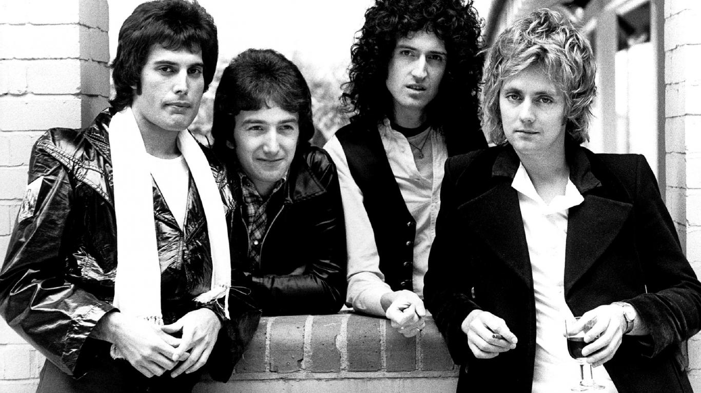

Queen es una banda de rock formada en 1970 en Londres por el guitarrista Brian May, el cantante y pianista Freddie Mercury y el baterista Roger Taylor, con el bajista John Deacon completando la alineación al año siguiente.
(De izqda a dcha) Freddie Mercury, John Deacon, Brian May y Roger Taylor.
Queen disfrutó del éxito en Gran Bretaña a principios de los '70 con los álbumes Queen y Queen II, pero fue con la publicación de Sheer Heart Attack en 1974 y A Night At The Opera el año siguiente que la banda alcanzó el éxito internacional. Publicaron 15 álbumes de estudio, 5 álbumes en vivo y numerosas recopilaciones.
Desde la muerte de Mercury en 1991 a causa de SIDA y el retiro de Deacon en 1997, May y Taylor se han presentado juntos ocasionalmente en eventos especiales y programas televisivos como músicos invitados junto a otros artistas y/o bandas. Desde 2004 a 2009 trabajaron junto a Paul Rodgers, bajo el nombre de Queen + Paul Rodgers. Queen ha vendido más de 300 millones de copias a nivel mundial, y en 2018 salió su película biográfica: Bohemian Rhapsody.
Miembros
Freddie Mercury (1946-1991)Su nombre de nacimiento es Farrokh Bulsara, que cambió más tarde. Es muy conocido por su voz, estilo y puestas en escena. Cuando Queen estaba en su auge, tuvo problemas con la prensa y el público en general debido a su orientación sexual. Era homosexual. Fue un gran músico, compositor y pianista, autor de los éxitos Bohemian Rhapsody, Killer Queen, Don't Stop Me Now, Crazy Little Thing Called Love, Barcelona y We Are The Champions.
Brian May (1947- )Brian Harold May, CBE (Commander of the British Empire) es un músico y astrofísico británico, además de vocalista, guitarrista y teclista de Queen. Es considerado uno de los guitarristas más grandes de la historia.Compuso muchos de los grandes éxitos de Queen, y utiliza una guitarra eléctrica hecha por él mismo, llamada "Red Special". En abril de 2007 fue elegido rector honorífico de la Universidad John Moores.
John Deacon (1951- )John Richard Deacon, nacido en Leicester, Reino Unido fue bajista de la banda. En varios discos también desempeñó el papel de guitarrista y más ocasionalmente de teclista. Es el autor de temas como Another One Bites the Dust, I Want to Break Free y You're My Best Friend, lo que demuestra su importante aporte al grupo en materia creativa. Es uno de los mejores y más versátiles bajistas de la historia del rock.
Roger Taylor (1949- )Roger Meddows Taylor en Kings Lynn Norfolk, Reino Unido. Es el baterista del grupo Queen, y si bien es poco valorado por ciertos sectores de la prensa, es un reconocido y destacado músico de la historia del rock, que en algunas canciones como solista actuó como guitarrista y vocalista. En la banda cantó y grabó coros, además de escribir canciones famosas de Queen como Sheer Heart Attack, I'm In Love With My Car, Innuendo, Radio Ga Ga, A Kind of Magic o Breakthru.
Álbumes
Canciones más escuchadas (Spotify)
Enlaces